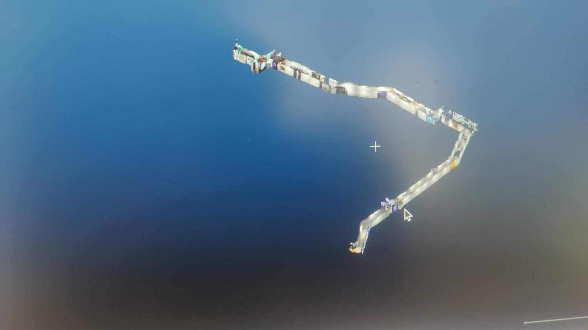
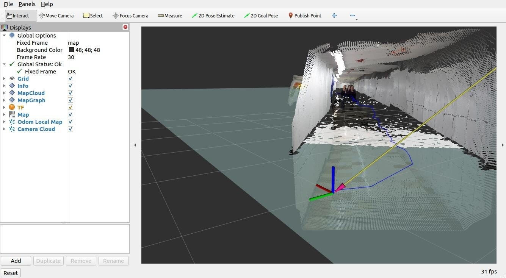
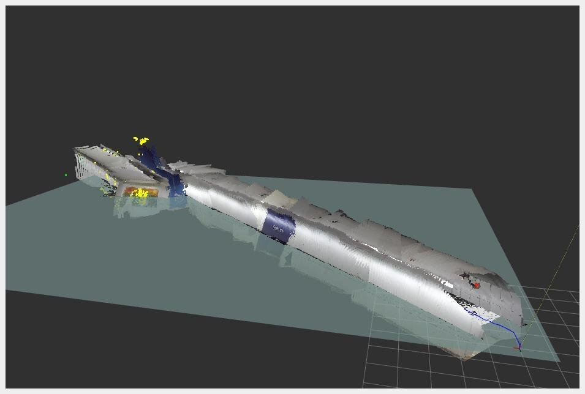

01 / Research
Underground Tunnel 3D Mapping
Built a 3D mapping system for Northeastern's 16,000-foot underground tunnel network — a GPS-denied environment with repetitive geometry, the kind of place that breaks most visual SLAM stacks. Combined RTAB-Map's loop-closure detection and memory management with a ZED Mini stereo camera and IMU, fusing the streams to hold accurate pose over long loops and generate high-resolution point clouds of the entire network.
16,000ft
Tunnel network mapped
95%
Localization accuracy


